Strand Residence Bergen aan Zee
Zeventig instapklare recreatieappartementen op eigen grond, midden in het dorp, op de plek van Hotel Prins Maurits. De verhuur ligt bij de initiatiefnemers van de plek zelf, dus u regelt geen gasten, geen schoonmaak en geen onderhoud. Oplevering in 2028.
Vrijblijvend. U zit nergens aan vast.
Let op! U belegt buiten AFM-toezicht. Geen vergunningplicht voor deze activiteit.
Op deze plek stond Hotel Prins Maurits. Het hotel was vanaf 1912 in handen van de familie Stroomer. Tom Stroomer is de vierde generatie.
Hij verzorgt samen met Remy Curfs de verhuur van de appartementen. Dat is het verschil met een park waar een keten de verhuur overneemt: hun inkomen hangt af van hoe goed uw appartement verhuurt. Zij blijven op de plek waar hun familie al vier generaties werkt.
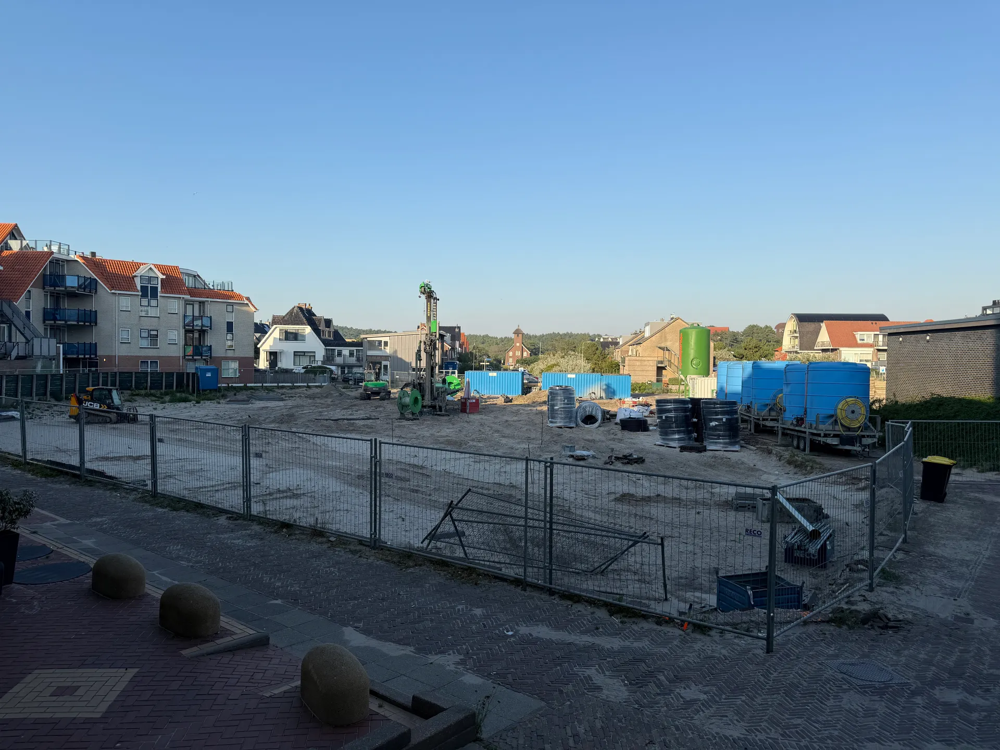
Tom Stroomer en Remy Curfs zijn de initiatiefnemers van het project en verzorgen de verhuur. Het verhuurkantoor komt op de begane grond van het gebouw, naast de ontbijt- en lunchroom en de fietsverhuur.
De verhalen over stijgende parkkosten en verkoopdruk op parken zijn bekend. Daarom staat hier per punt waar u het kunt nalezen.
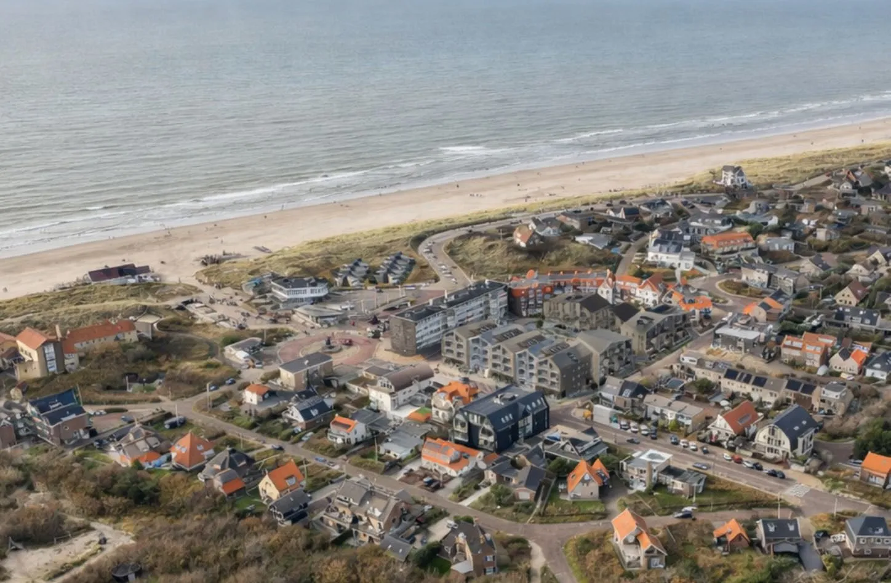
De twee gebouwen staan aan de Zeeweg en de Van Hasseltweg, midden in Bergen aan Zee, op circa 100 meter van het strand. U koopt een appartementsrecht op eigen grond, met een VvE.
Tom Stroomer en Remy Curfs verhuren de appartementen vanuit het verhuurkantoor in het gebouw. De commissie is 25 procent van de kale huur, en dat percentage staat ook in de rendementsprognose.
U mag het appartement tot 89 dagen per jaar zelf gebruiken. De rest van het jaar wordt het verhuurd. Vakanties, weekenden buiten het seizoen en dagen met het gezin plant u zelf in.
De prijzen liggen tussen € 541.500 en € 993.000 v.o.n. exclusief btw, inclusief de inrichting. U kiest uit twee interieurstijlen en hoeft daarna niets meer aan te schaffen.
Keuze uit twee interieurstijlen. Apparatuur en sanitair van Siemens, Hansgrohe en Quooker. De grotere types hebben een sauna en of een jacuzzi.
De gebouwen zijn gasloos, met warmtepompen op bodemenergie en vloerverwarming die in de zomer ook koelt. Er is een parkeergarage en bij elk appartement hoort een eigen berging.
Op de begane grond komen een ontbijt- en lunchroom, fietsverhuur en het verhuurkantoor.
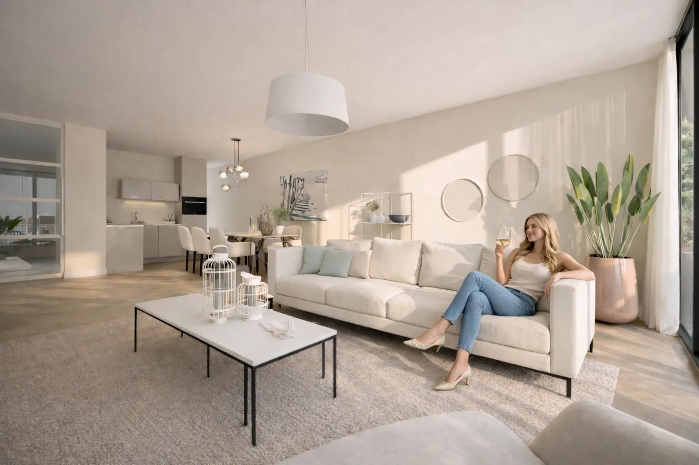
| Type | Oppervlakte | Personen | Prijs v.o.n. excl. btw | Plattegrond |
|---|---|---|---|---|
| [TYPE 1] | circa [..] m² | 4 | vanaf € 541.500 | [PDF] |
| [TYPE 2] | circa [..] m² | 4 tot 6 | € [..] | [PDF] |
| [TYPE 3] | circa [..] m² | 6 | tot € 993.000 | [PDF] |
De volledige prijslijst met alle types, oppervlakten en plattegronden zit in de brochure.
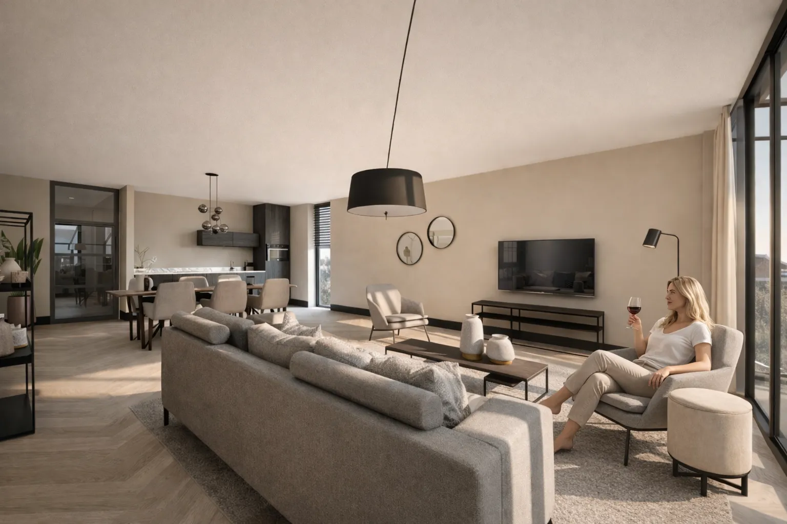
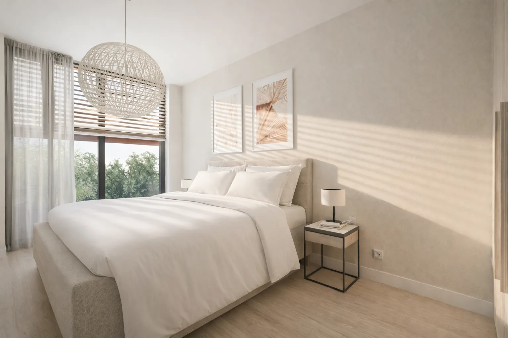
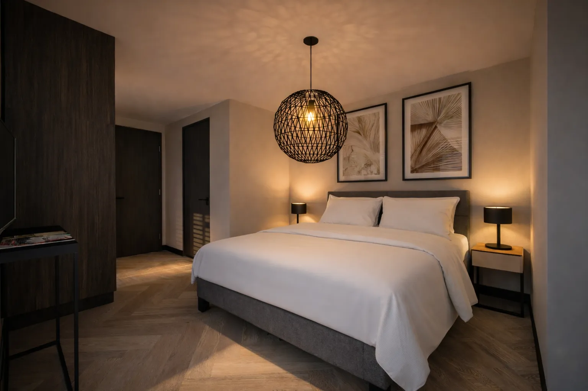
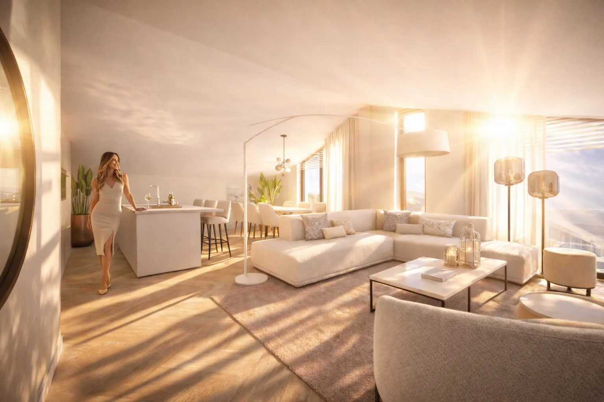
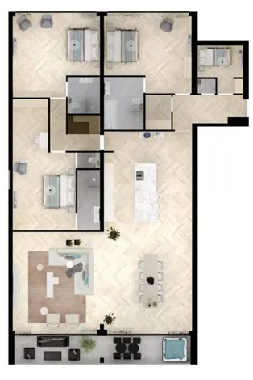
Vrijblijvend. U zit nergens aan vast.
Circa 30 minuten
U plant een kennismaking op locatie in Bergen aan Zee of via videobellen, of u vraagt eerst de brochure en prijslijst aan. In het gesprek lopen we de beschikbare appartementen, de prijzen en de rendementsprognose door en krijgt u de stukken te zien.
Optie van één week
Kiest u een appartement, dan zetten we dat één week in optie. In die week legt u uw vragen voor aan uw eigen adviseur of aan de onafhankelijk fiscaal adviseur. Laat u de optie verlopen, dan gebeurt er niets en bent u niets verschuldigd.
Oplevering 2028
De koop gaat via de notaris. U betaalt in termijnen per bouwfase, dus niet het hele bedrag in één keer. Daarna volgt de oplevering in 2028.
Een prognose is geen belofte. Daarom staat hier eerst waarop gerekend is, zodat u de som zelf kunt narekenen of kunt laten narekenen.
De prognoses zijn opgesteld door extern adviesbureau ParcPro's, per appartement. Deze aannames zijn openbaar en staan in de stukken:
Wat overblijft is het verwachte directe rendement. Een eventuele waardestijging van het appartement zit daar niet in, die is geen onderdeel van het directe rendement.
| Type appartement | [TYPE, .. m², .. personen] |
| Verwachte verhuurweken per jaar | [.. weken] |
| Bruto huuropbrengst | € [..] |
| Commissie verhuur, 25 procent van de kale huur | € [..] |
| Vaste lasten, waaronder VvE-bijdrage | € [..] |
| Verwachte netto opbrengst per jaar | € [..] |
Let op! U belegt buiten AFM-toezicht. Geen vergunningplicht voor deze activiteit.
U betaalt een VvE-bijdrage voor het onderhoud van de gebouwen en de gemeenschappelijke ruimten, verzekeringen, gemeentelijke lasten en energie. Op de verhuur komt 25 procent commissie op de kale huur.
De bedragen per type staan in de prijslijst en in de prognose die u bij de brochure krijgt. In het gesprek lopen we de posten regel voor regel langs.
De verhuur ligt bij Tom Stroomer en Remy Curfs, de initiatiefnemers van het project, vanuit het verhuurkantoor op de begane grond. Er zit geen keten tussen.
Hoe de verhuurweken over de appartementen worden verdeeld staat in de verhuurovereenkomst. Die krijgt u volledig te zien voordat u iets ondertekent.
U mag het appartement tot 89 dagen per jaar zelf gebruiken. Daarbinnen bent u vrij in de keuze van uw dagen, ook in het seizoen.
Hoe u die dagen reserveert, en hoe lang vooraf, leggen we vast in de verhuurovereenkomst.
De prijzen zijn v.o.n. exclusief btw. Omdat het appartement wordt verhuurd, is de btw terug te vragen naar rato van uw eigen gebruik.
Voor uw eigen situatie geldt uw eigen fiscale positie. Duin & Pedroli is als onafhankelijk fiscaal adviseur beschikbaar en rekent uw situatie door. Wij geven zelf geen fiscaal advies.
Beide komen voor. Welke vorm in uw geval het meest logisch is, hangt af van uw vermogenspositie en van de fiscale gevolgen.
Bij de aanvraag kunt u aangeven of u privé of via een BV denkt te kopen, dan sluit het gesprek daarop aan.
De oplevering staat gepland in 2028. U betaalt in termijnen per bouwfase, dus uw geld gaat mee met de bouw.
De stand van de vergunning en de planning bespreken we in de kennismaking, zodat u ziet waarop de datum is gebaseerd.
U koopt een appartementsrecht op eigen grond, dat u kunt verkopen. Welke voorwaarden er bij doorverkoop gelden, en of de verhuurovereenkomst meegaat naar de koper, staat in de akte en in de verhuurovereenkomst. Vraag deze stukken op voordat u besluit.
Let op! U belegt buiten AFM-toezicht. Geen vergunningplicht voor deze activiteit.
Dit betekent dat er voor dit aanbod geen vergunningplicht geldt en dat de Autoriteit Financiële Markten er geen toezicht op houdt. U kunt dus niet terugvallen op dat toezicht. Daarom staan de aannames achter de prognose hierboven open en zijn de akte, het VvE-reglement en de verhuurovereenkomst op te vragen voordat u iets ondertekent.
De plek zelf zegt meer dan een brochure. U staat in twee minuten bij de duinovergang en op het strand.
Zaterdag 17 oktober 2026
Zeeweg 37, Bergen aan Zee. De plattegronden, de prijslijst en de prognoses liggen er, en de initiatiefnemers zijn aanwezig voor uw vragen.
Elke vrijdag
Zonder afspraak, Zeeweg 37, Bergen aan Zee. Loopt u binnen op een vrijdagmiddag, dan kunt u dezelfde stukken inzien en meteen uw vragen stellen.
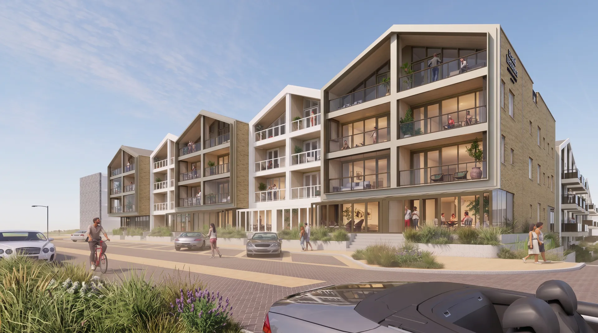
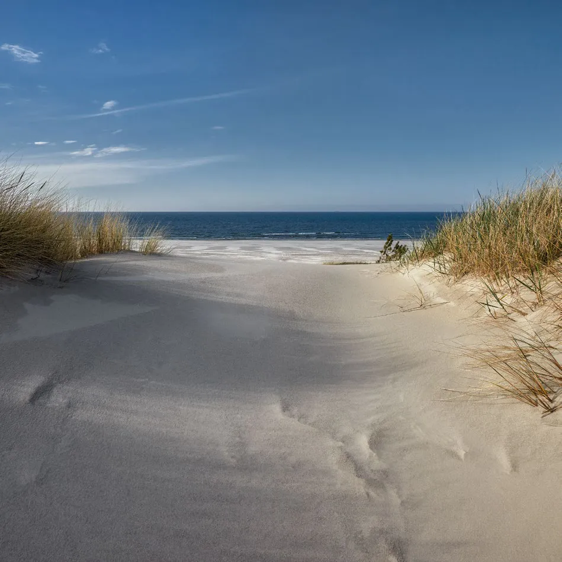
Route vanaf de A9: u volgt de A9 richting Alkmaar, daarna de N9 en de N510 naar Bergen. In Bergen volgt u de Zeeweg richting Bergen aan Zee, tot in het dorp.
Vrijblijvend. U zit nergens aan vast.
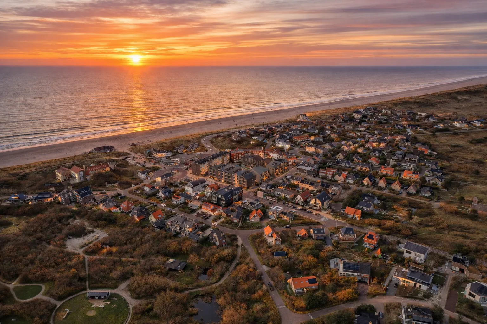
Beide kosten u niets en verplichten u tot niets. U krijgt de stukken te zien voordat er iets wordt vastgelegd, en u kunt op elk moment stoppen.